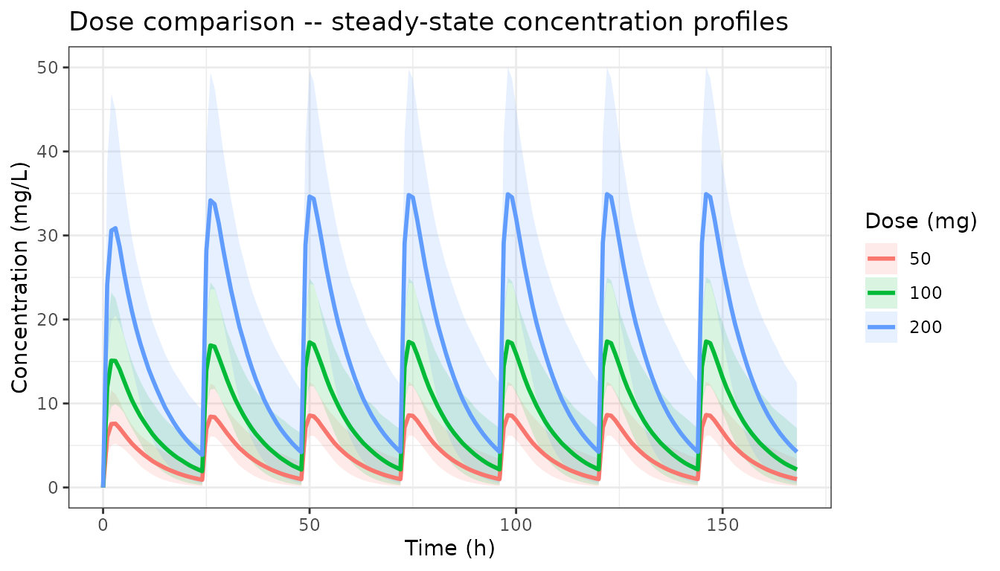
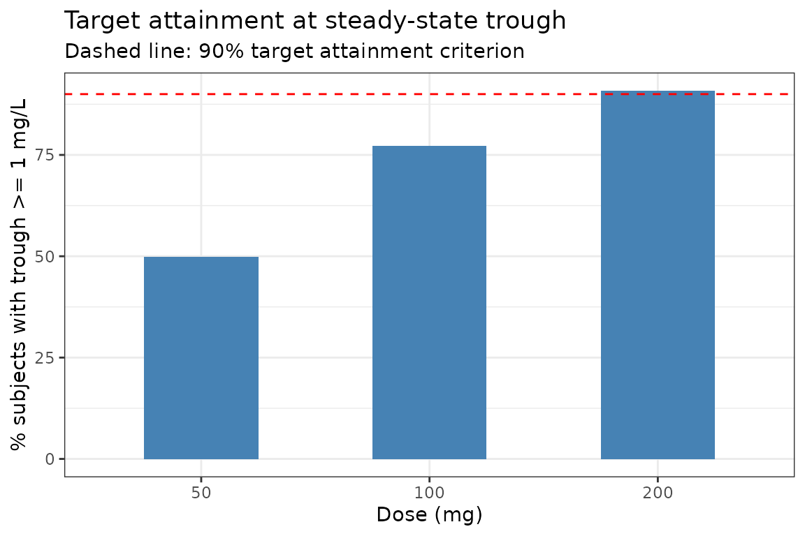
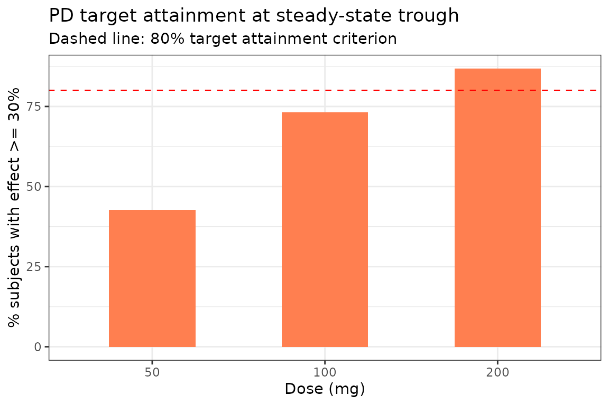
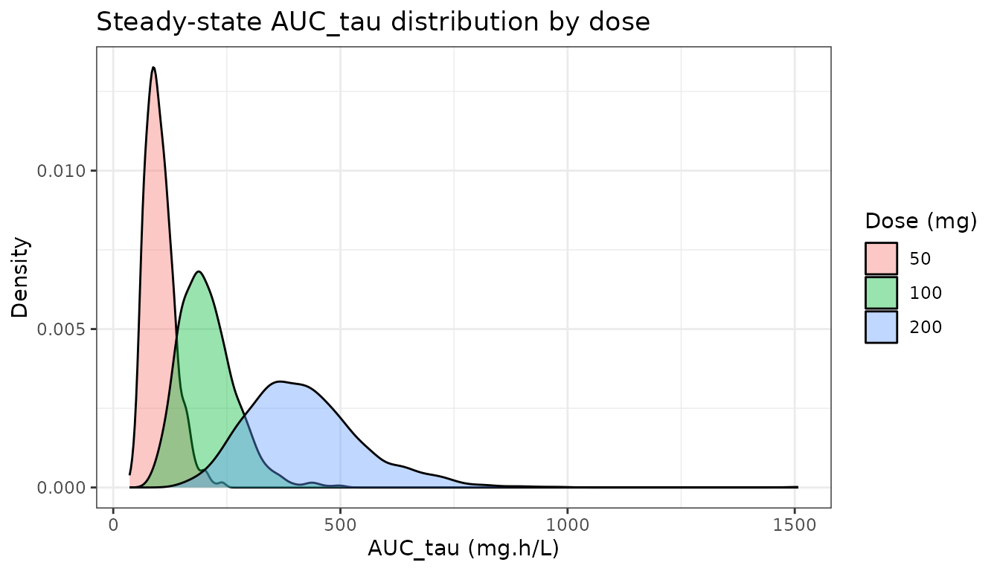
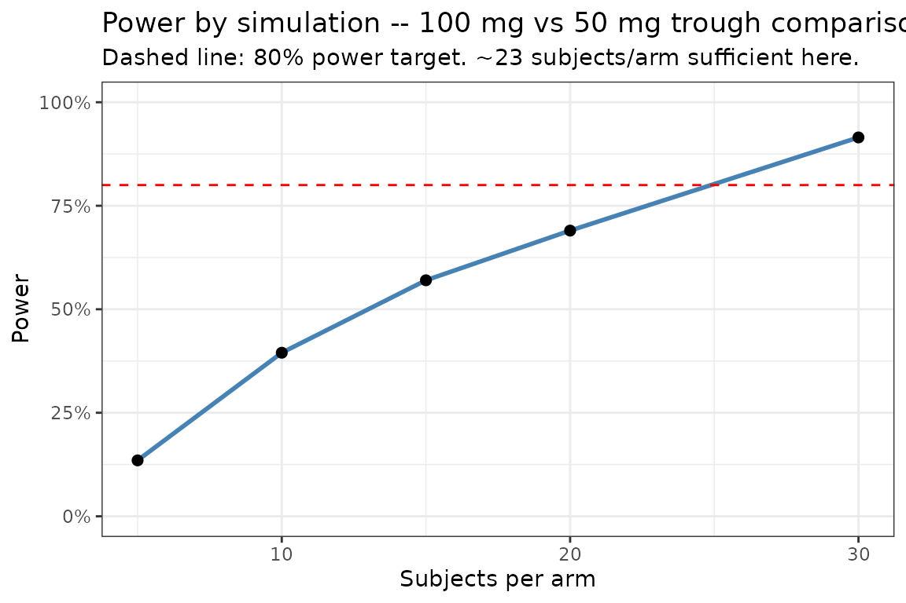
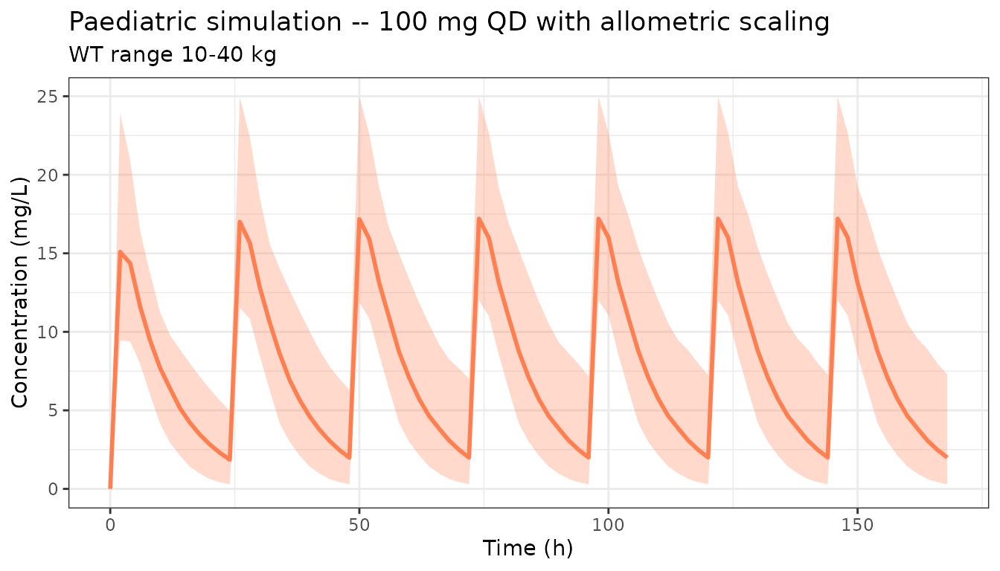

Clinical Trial Simulation with rxode2
Source:vignettes/articles/rxode2-clinical-trial-sim.Rmd
rxode2-clinical-trial-sim.Rmd
library(rxode2)
#> rxode2 5.0.2 using 2 threads (see ?getRxThreads)
#> no cache: create with `rxCreateCache()`
library(ggplot2)
library(data.table)Overview
Clinical trial simulation (CTS) uses a pharmacometric model to predict trial outcomes in silico before running an expensive study. Common applications include:
- Dose regimen selection — which dose and frequency optimises exposure relative to a PK/PD target?
- Target attainment analysis (TAA) — what fraction of patients achieves the desired exposure target?
- Sample-size estimation by simulation — how many subjects are needed to detect a treatment difference with adequate power?
- Special population predictions — paediatric, renal impairment, or other covariate subgroups.
Model setup
We use a one-compartment oral PK model linked to a simple Emax PD model to illustrate several CTS tasks.
pkpdModel <- function() {
ini({
tka <- log(1.0); label("log Ka (1/h)")
tcl <- log(0.5); label("log CL (L/h)")
tv <- log(5.0); label("log V (L)")
temax <- log(80); label("log Emax (%)")
tec50 <- log(2.0); label("log EC50 (mg/L)")
eta.cl ~ 0.09
eta.v ~ 0.09
prop.sd <- 0.15
})
model({
ka <- exp(tka)
cl <- exp(tcl + eta.cl)
v <- exp(tv + eta.v)
emax <- exp(temax)
ec50 <- exp(tec50)
d/dt(depot) <- -ka * depot
d/dt(center) <- ka * depot - cl / v * center
cp <- center / v
## Emax PD model
effect <- emax * cp / (ec50 + cp)
cp ~ prop(prop.sd)
})
}Dose regimen comparison
Compare three once-daily oral doses (50, 100, 200 mg) in a 1000-subject population.
nSub <- 1000
doses <- c(50, 100, 200)
# Build a list of event tables — one per dose
evList <- lapply(doses, function(d) {
et(amt = d, ii = 24, addl = 6) |> # 7-day QD
et(seq(0, 168, by = 1)) # hourly observations
})
# Simulate all doses in one call using a named list
simList <- lapply(seq_along(doses), function(i) {
res <- rxSolve(pkpdModel, evList[[i]], nSub = nSub,
returnType = "data.frame")
res$dose <- doses[i]
res
})
simAll <- rbindlist(simList)Concentration-time profiles by dose
dt <- as.data.table(simAll)
medCI <- dt[, .(
p05 = quantile(cp, 0.05),
p50 = quantile(cp, 0.50),
p95 = quantile(cp, 0.95)
), by = .(time, dose)]
ggplot(medCI, aes(x = time, group = factor(dose), colour = factor(dose),
fill = factor(dose))) +
geom_ribbon(aes(ymin = p05, ymax = p95), alpha = 0.15, colour = NA) +
geom_line(aes(y = p50), linewidth = 1) +
labs(x = "Time (h)", y = "Concentration (mg/L)",
colour = "Dose (mg)", fill = "Dose (mg)",
title = "Dose comparison — steady-state concentration profiles") +
theme_bw()
Target attainment analysis (TAA)
Define a PK target as trough concentration ≥ 1 mg/L at steady state (day 7, trough = 168 h).
trough <- dt[time == 168, .(
pctAbove = mean(cp >= 1.0) * 100
), by = dose]
ggplot(trough, aes(x = factor(dose), y = pctAbove)) +
geom_col(fill = "steelblue", width = 0.5) +
geom_hline(yintercept = 90, linetype = "dashed", colour = "red") +
labs(x = "Dose (mg)", y = "% subjects with trough ≥ 1 mg/L",
title = "Target attainment at steady-state trough",
subtitle = "Dashed line: 90% target attainment criterion") +
theme_bw()
PK/PD target: % of population with effect ≥ 50%
Using the Emax model, what fraction achieves ≥ 30% of maximum effect at the trough?
pdTarget <- dt[time == 168, .(
pctTarget = mean(effect >= 30) * 100
), by = dose]
ggplot(pdTarget, aes(x = factor(dose), y = pctTarget)) +
geom_col(fill = "coral", width = 0.5) +
geom_hline(yintercept = 80, linetype = "dashed", colour = "red") +
labs(x = "Dose (mg)", y = "% subjects with effect ≥ 30%",
title = "PD target attainment at steady-state trough",
subtitle = "Dashed line: 80% target attainment criterion") +
theme_bw()
Exposure metric distributions
Compute AUC over one dosing interval at steady state (day 7, hours 144–168) for each dose.
ss <- dt[time >= 144 & time <= 168]
aucSS <- ss[, .(
AUCtau = sum(diff(time) * (cp[-length(cp)] + cp[-1]) / 2)
), by = .(sim.id, dose)]
ggplot(aucSS, aes(x = AUCtau, fill = factor(dose))) +
geom_density(alpha = 0.4) +
labs(x = "AUC_tau (mg·h/L)", y = "Density",
fill = "Dose (mg)",
title = "Steady-state AUC_tau distribution by dose") +
theme_bw()
Sample-size estimation by simulation
Estimate the power to detect a difference in mean trough concentration between 100 mg and 50 mg using a two-sample t-test, as a function of sample size.
set.seed(99)
nSizes <- c(5, 10, 15, 20, 30)
nTrials <- 200 # increase to >= 1000 for stable power estimates
powerRes <- rbindlist(lapply(nSizes, function(n) {
pvals <- vapply(seq_len(nTrials), function(trial) {
# Simulate n subjects per arm
sim50 <- rxSolve(pkpdModel,
et(amt = 50, ii = 24, addl = 6) |> et(168),
nSub = n, returnType = "data.frame")
sim100 <- rxSolve(pkpdModel,
et(amt = 100, ii = 24, addl = 6) |> et(168),
nSub = n, returnType = "data.frame")
t.test(sim100$cp, sim50$cp)$p.value
}, numeric(1))
data.table(n = n, power = mean(pvals < 0.05))
}))
ggplot(powerRes, aes(x = n, y = power)) +
geom_line(linewidth = 1, colour = "steelblue") +
geom_point(size = 2) +
geom_hline(yintercept = 0.80, linetype = "dashed", colour = "red") +
scale_y_continuous(labels = scales::percent, limits = c(0, 1)) +
labs(x = "Subjects per arm", y = "Power",
title = "Power by simulation — 100 mg vs 50 mg trough comparison",
subtitle = "Dashed line: 80% power target. ~23 subjects/arm sufficient here.") +
theme_bw()
Special population simulation
Simulate the 100 mg dose in a paediatric population with lower body weight driving CL allometrically:
# Covariate table for a paediatric cohort (n=200, WT 10-40 kg)
set.seed(7)
pedCovs <- data.frame(
id = 1:200,
WT = runif(200, 10, 40)
)
# Model with allometric CL scaling
pedModel <- pkpdModel |>
model({
cl <- exp(tcl + eta.cl) * (WT / 70)^0.75
v <- exp(tv + eta.v) * (WT / 70)
}, append = NA)
pedSim <- rxSolve(
pedModel,
et(amt = 100, ii = 24, addl = 6) |>
et(seq(0, 168, by = 2)) |>
et(id=1:200),
iCov = pedCovs,
nSub = nrow(pedCovs),
returnType = "data.frame"
)
pedDT <- as.data.table(pedSim)
pedCI <- pedDT[, .(p05 = quantile(cp, 0.05),
p50 = quantile(cp, 0.50),
p95 = quantile(cp, 0.95)), by = time]
ggplot(pedCI, aes(x = time)) +
geom_ribbon(aes(ymin = p05, ymax = p95), fill = "coral", alpha = 0.3) +
geom_line(aes(y = p50), colour = "coral", linewidth = 1) +
labs(x = "Time (h)", y = "Concentration (mg/L)",
title = "Paediatric simulation — 100 mg QD with allometric scaling",
subtitle = "WT range 10–40 kg") +
theme_bw()
Tips
- Use
rxSetSeed()/rxWithSeed()for reproducible simulations. - Increase
nSubandnTrials(for power simulations) for production analyses; the values used here are kept small for build speed. - Combine parameter uncertainty (see the parameter uncertainty vignette) with BSV for the most complete uncertainty propagation.
- The
nlmixr2libpackage provides published models ready for use in clinical trial simulations.